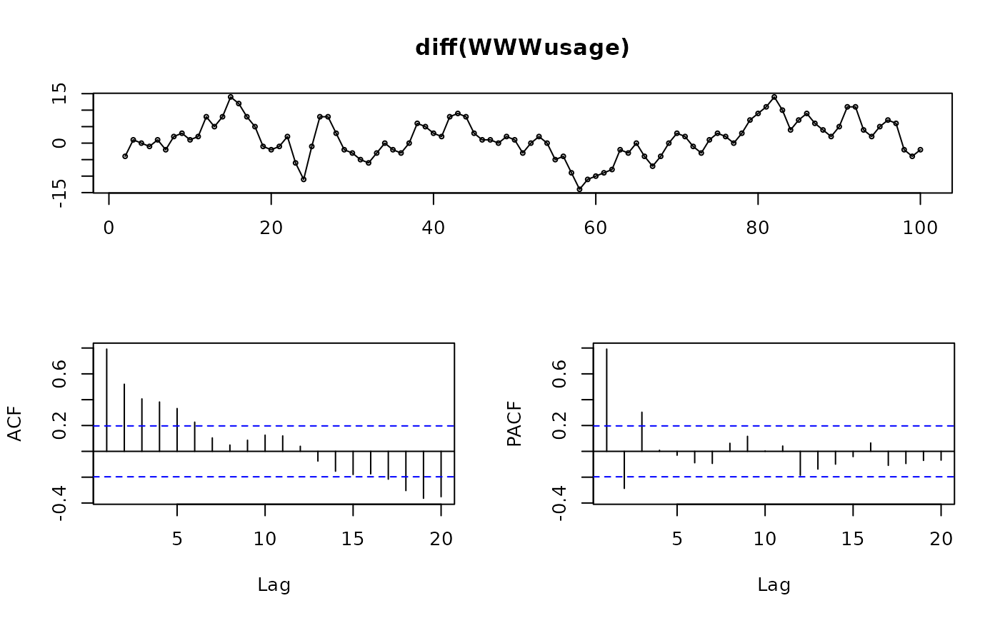

Plots a time series along with its acf and either its pacf, lagged scatterplot or spectrum.
ggtsdisplay( x, plot.type = c("partial", "histogram", "scatter", "spectrum"), points = TRUE, smooth = FALSE, lag.max, na.action = na.contiguous, theme = NULL, ... ) tsdisplay( x, plot.type = c("partial", "histogram", "scatter", "spectrum"), points = TRUE, ci.type = c("white", "ma"), lag.max, na.action = na.contiguous, main = NULL, xlab = "", ylab = "", pch = 1, cex = 0.5, ... )
Arguments
| x | a numeric vector or time series of class |
|---|---|
| plot.type | type of plot to include in lower right corner. |
| points | logical flag indicating whether to show the individual points or not in the time plot. |
| smooth | logical flag indicating whether to show a smooth loess curve superimposed on the time plot. |
| lag.max | the maximum lag to plot for the acf and pacf. A suitable value is selected by default if the argument is missing. |
| na.action | function to handle missing values in acf, pacf and spectrum
calculations. The default is |
| theme | Adds a ggplot element to each plot, typically a theme. |
| ... | additional arguments to |
| ci.type | type of confidence limits for ACF that is passed to
|
| main | Main title. |
| xlab | X-axis label. |
| ylab | Y-axis label. |
| pch | Plotting character. |
| cex | Character size. |
Value
None.
Details
ggtsdisplay will produce the equivalent plot using ggplot graphics.
References
Hyndman and Athanasopoulos (2018) Forecasting: principles and practice, 2nd edition, OTexts: Melbourne, Australia. https://OTexts.org/fpp2/
See also
Examples
ggtsdisplay(USAccDeaths, plot.type="scatter")